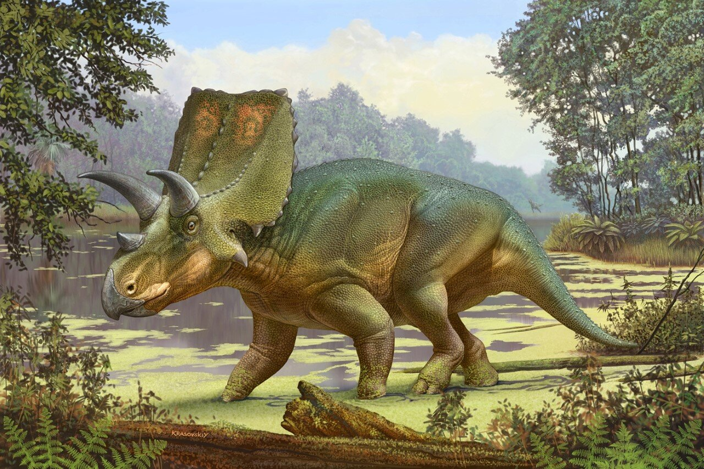

This is what a triceratops looks like.
it will also tell you about it in the wild with its diffrent traits and personalities.
These are the defensive dinosaur everyone knows and loves they are known as the aincent rihno.These dinosaurs have a very cool life style in their time.These are my favorite dinosaur because of their big three horns and their way to survive.These dinosaur species have increadible talent some even say if it were still alive it would make a great house pet.
